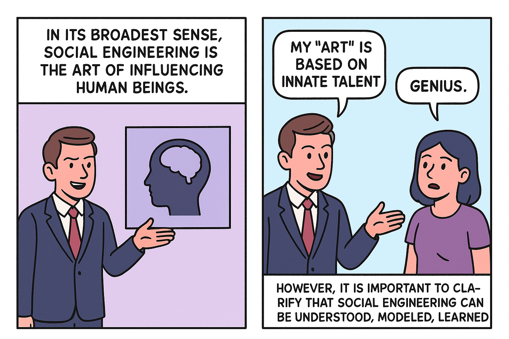

In its broadest sense, social engineering is the art of influencing human beings.
Social engineers might try to make people believe that their "art" is based on innate talent or natural gifts. This perception helps them appear exceptional and reinforce their image as "geniuses"
However, it is important to clarify that social engineering can be understood, modeled, learned and taught.
